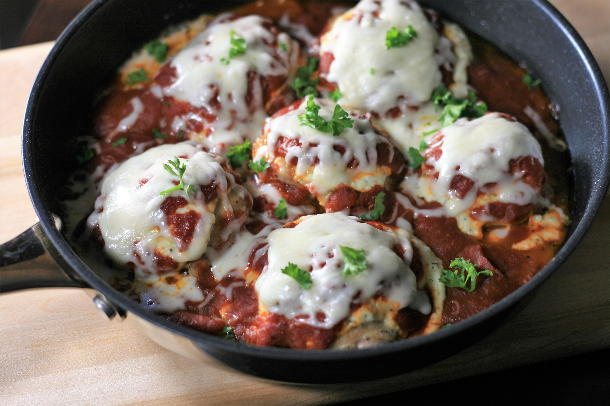

<!DOCTYPE html>
<html lang="en">    
</html>

<head>
    <meta charset="utf-8">

    <title>Chicken recipe</title>
</head>
<body>
    <h1>Baked Italian Chicken Thighs</h1>
    
    <p><strong>Description:</strong>These juicy chicken thighs are topped with a flavorful blend of three cheeses<br>
         and your favorite marinara sauce. Serve over pasta or rice or alongside roasted potatoes for a tasty weeknight meal.<br>
          I like to shred my own cheese, as I find it melts better, but feel free to use pre-shredded to save time.  
    </p>
    <h4>Ingredients:</h4>
    <ul>
        <li>½ cup low-fat ricotta cheese</li>
        <li>¼ cup freshly grated Parmesan cheese</li>
        <li>½ teaspoon Italian seasoning</li>
        <li>⅛ teaspoon salt</li>
        <li>1 pound skinless, boneless chicken thighs</li>
        <li>1 teaspoon garlic powder</li>
        <li>salt to taste</li>
        <li>1 tablespoon olive oil</li>
        <li>1½ cups marinara sauce</li>
        <li>¾ cup shredded mozzarella cheese</li>
        <li>2 tablespoons chopped fresh parsley (Optional)</li>
    </ul>

    <h4>Steps:</h4>
    <ol>
        <li>Preheat the oven to 375 degrees F (190 degrees C).</li>
        <li>Combine ricotta cheese, Parmesan cheese, Italian seasoning, and salt in a small bowl and set aside.</li>
        <li>Season chicken thighs on both sides with garlic powder and salt.</li>
        <li>Heat olive oil in an oven-proof skillet over medium-high heat. Place chicken thighs,<br>
             smooth-side down in pan and brown, 3 to 4 minutes. Flip thighs over and remove skillet from heat.<br>
              Top each thigh with an equal amount of ricotta cheese mixture. Spoon marinara sauce over<br>
               the ricotta cheese and around the chicken thighs.</li>
        <li>Bake in the preheated oven until chicken is no longer pink in the center and the juices run clear,<br>
             about 25 minutes. An instant-read thermometer inserted into the center should read<br>
              at least 165 degrees F (74 degrees C). Remove from the oven and leave oven on.</li>
        <li>Top chicken with mozzarella cheese and return to the oven until cheese has melted,<br>
             2 to 3 minutes. Garnish with parsley and serve.</li>
    </ol>
</body>
